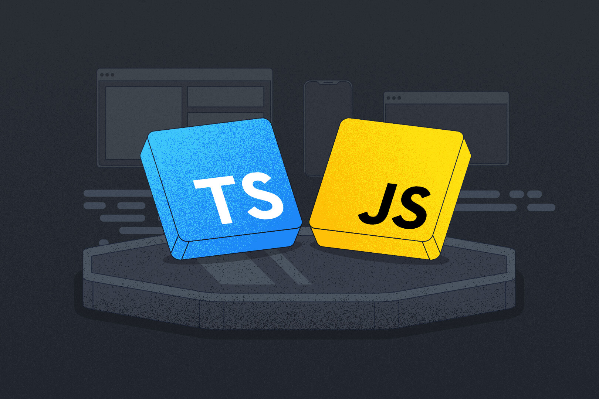

JavaScript y TypeScript
Programación Dinámica Web
JavaScript es un lenguaje de programación que permite implementar funciones complejas en páginas web. Se utiliza para crear contenido dinámico, controlar multimedia, animar imágenes, y mucho más.
TypeScript es un superset de JavaScript que añade tipos estáticos. Esto permite detectar errores durante el desarrollo y hace que el código sea más fácil de mantener y escalar.
El DOM (Document Object Model) es una interfaz de programación para documentos HTML y XML que permite a los programas cambiar la estructura, estilo y contenido de un documento.
Canvas y Gráficos
Canvas es una API de HTML5 que permite dibujar gráficos mediante scripting, generalmente JavaScript.
Ejemplo de Canvas:
const canvas = document.getElementById('myCanvas');
const ctx = canvas.getContext('2d');
// Dibujar un rectángulo azul
ctx.fillStyle = 'blue';
ctx.fillRect(10, 10, 100, 100);
// Dibujar un círculo rojo
ctx.beginPath();
ctx.arc(200, 60, 50, 0, 2 * Math.PI);
ctx.fillStyle = 'red';
ctx.fill();
// Animación simple
function animate() {
ctx.clearRect(0, 0, canvas.width, canvas.height);
// Lógica de animación aquí
requestAnimationFrame(animate);
}
animate();TypeScript en Acción
// Definición de interfaces
interface Usuario {
id: number;
nombre: string;
email: string;
activo: boolean;
}
// Función con tipos
function crearUsuario(datos: Partial<Usuario>): Usuario {
return {
id: Math.random(),
nombre: datos.nombre || 'Sin nombre',
email: datos.email || '',
activo: datos.activo ?? true
};
}
// Uso de la función
const nuevoUsuario = crearUsuario({
nombre: 'Ivan Paul',
email: 'ivan@example.com'
});Conceptos Clave Aprendidos
- Manipulación del DOM: Selección y modificación de elementos
- Eventos: Click, hover, submit, keyboard events
- Canvas API: Dibujo de gráficos y animaciones
- TypeScript: Tipado estático, interfaces, generics
- ES6+: Arrow functions, destructuring, modules
Reflexión Personal
Fortalecí mi lógica de programación y la interacción directa con elementos HTML. Aprendí a crear animaciones y gráficos dinámicos usando Canvas, lo que abrió nuevas posibilidades creativas.
TypeScript me enseñó la importancia del tipado estático para proyectos escalables, mejorando significativamente la calidad y mantenibilidad del código.